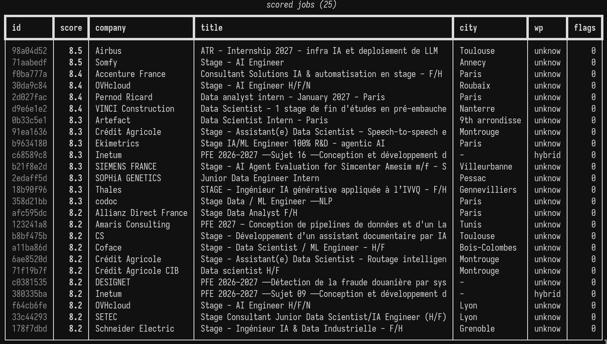

Pilot - Internship Discovery & Application Pipeline
Project Description
Applying for internships is one loop repeated: find postings, work out which ones are worth reading, tailor a CV and a letter for the good ones, then fill in the same form you filled in last week, and each form is different and most of the times it'd be this tedious loop of creating an account, filling the same info, different steps for each one. Needless to say, it got old real fast, and so I built this little tool.
It's a Python CLI over SQLite, config driven, typed with pydantic and covered by tests. Looking for a job is a bad moment to find out the tool quietly dropped half your applications.
Discovery and Scoring
The sources are the ones that don't need an account and don't involve scraping a logged-in session: curated application lists, the ATS boards companies actually use, and job boards for France and Tunisia. Everything normalises into one schema with dedupe keys, plus detection for ATS type, contract type, workplace and country, so we don't get the same posting twice.
Every posting is scored against my profile by an LLM, with the reason stored next to the score. 1,417 postings scored against the current profile, 358 of them at 7.0 or above, and those are the ones that I care about.
Tailoring
The CV facts are extracted from this website's own content, so the CV and the site can't drift apart. From those facts Pilot composes a per-application CV in English or French, renders it to docx, exports a PDF through LibreOffice, and writes a cover letter with a deterministic header and facts and a generated body.
Anything generated passes a lint gate before it's kept: banned phrases, banned structures, dash abuse, and a comparison against samples of my own writing. If it trips the gate it gets one more try, then it's flagged for me instead of shipped.
Applying
The browser layer is Playwright with a persistent profile, so a signed-in session survives between runs. Each provider gets its own route:
- In-site forms come out of the DOM, get mapped to my approved facts, get filled, and stay open on screen for review
- Email applications become
.emldrafts ready to send - Login walls are detected and reported, not brute forced
Then I review, edit whatever I need and submit.
Where It's At
In use now, daily. It's built around just my own profile, and the choices inside it live in a config, I'm iterating on it as I use it.
Screenshots
